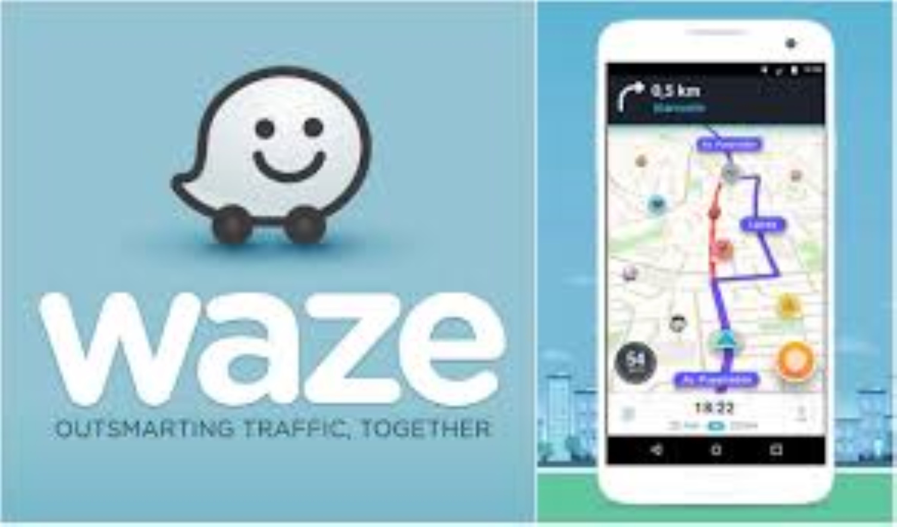

This project involved creating a SQL-based customer segmentation strategy for NovaTrust Bank, targeting former student customers now receiving regular salary deposits. By analyzing transaction data with an RFM model, I identified opportunities for tailored marketing campaigns and product offerings, enhancing customer engagement and retention.


In this project, I analyzed shopping cart abandonment for MagicMade, leveraging SQL and Power BI to uncover insights into user behavior. I addressed challenges such as high abandonment rates and customer dissatisfaction, revealing that over 55% of abandonments occur on mobile devices due to complex checkout processes. My strategies focused on optimizing mobile experiences and simplifying the checkout, enhancing conversion rates and improving overall customer satisfaction.

In this project, I analyzed Daiz Bank's loan portfolio using Power BI to assess and mitigate risks. By examining 1,500 loan records, I identified key insights into borrower demographics and repayment behaviors. The analysis revealed a 61.9% repayment rate, with recommendations for enhancing credit scoring, tightening underwriting standards, and developing early intervention strategies. This approach helps Daiz Bank optimize risk management and drive sustainable growth.

In this project, I focused on optimizing delivery routes for UrbanEats in dense urban areas. Using SQL for data analysis and Power BI for visualization, I addressed challenges like delivery delays, driver attrition, and traffic congestion. The insights led to actionable strategies, including real-time route adjustments, balanced driver scheduling, and improved customer communication. This solution enhances delivery efficiency, reduces operational costs, and improves driver and customer satisfaction.

In this project, I analyzed online voting system data to address voter turnout, security vulnerabilities, and user experience issues. Using SQL for data cleaning and exploratory analysis, and Power BI for visualization, I uncovered trends in voter demographics, security incidents, and user interactions. The insights provided actionable recommendations to increase voter engagement, enhance system security, and improve usability, making online voting more secure and accessible.

In this project, I analyzed HR data to predict employee turnover and uncover key retention drivers. Using Python, I performed EDA, visualization, and logistic regression modeling with tools like Pandas, Seaborn, and Scikit-learn. The analysis identified critical factors like burnout, tenure, and promotions, offering actionable strategies to enhance employee retention and foster a more engaged workforce.

In this project, I analyzed Waze user data to uncover key drivers of churn and crafted actionable strategies to boost retention. Leveraging Python, I conducted a deep dive into user behavior, identifying patterns that distinguish retained users from those who churned. Through A/B testing, I explored device impact on engagement, offering tailored recommendations for enhancing user experience.

This project addresses critical challenges in tenant retention for property management, such as high churn rates, inefficient lease renewals, and lack of actionable insights. Using Power BI, I designed an interactive dashboard that empowers property managers to make data-driven decisions to improve tenant satisfaction and operational efficiency.
Conducted A/B testing on 500,000 emails to compare the effectiveness of personalized and urgency-based subject lines. Used statistical analysis to measure their impact on open rates, click-through rates, and conversions. Validated findings with Z-tests and visualized results using Python and data visualization tools to optimize email marketing strategies.

An end-to-end hybrid movie recommendation system (MovixCloud) combining content-based and collaborative filtering techniques to deliver personalized movie suggestions. This project demonstrates expertise in data acquisition, preprocessing, modeling, evaluation, and deployment.